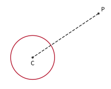

ホーム ＞ 数学II ＞ 円
円 \((x-1)^2+(y-2)^2=4\) の外部の点 \(P(7,6)\) から円に引いた接線の長さ（\(P\) から接点までの距離）を求めよ。
接点を \(T\) とすると \(CT\perp PT\)。三平方の定理から \(PT^2=PC^2-r^2\)。
接点を \(T\) とすると \(CT\perp PT\)。三平方の定理。

\[PC^2=(7-1)^2+(6-2)^2=52\]
【答案（テストに書く形）】
答